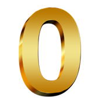

:
:
html
--------
<div id="div">
<img src="img/0.png" style="height: 50px;">
<img src="img/0.png" style="height: 50px;">
:
<img src="img/0.png" style="height: 50px;">
<img src="img/0.png" style="height: 50px;">
:
<img src="img/0.png" style="height: 50px;">
<img src="img/0.png" style="height: 50px;">
</div>
css
--------
div{margin: auto;font-size: 50px;width: 500px;height:100px;border: 3px solid gray;text-align: center;line-height:
100px;background:black;color:burlywood}
js
--------
var oDiv=document.getElementById('div');
var aImg=oDiv.getElementsByTagName('img');
setInterval(tick,1000);//因为有1000的设定，所以一刷新网页之后会先显示默认值1秒钟
tick();//直接执行一下，就不会有1秒钟的延迟了
function tick()
{
var oDate= new Date();
var str=toDou(oDate.getHours())+toDou(oDate.getMinutes())+toDou(oDate.getSeconds());//这里是字符串相加，所以12+34=1234；
for (var i=0;i < aImg.length;i++)
{
aImg[i].src='img/' +str.charAt(i)+'.png'; //The charAt() method returns the character at the specified index in a string.
}
}
function toDou(n) //加0 并且变成字符串
{
if(n < 10)
{
return '0' + n; //让 1 -> 01 便于显示
}
else
{
return ''+ n; //仍旧要加一个空的字符串，这样就可以把数字变成字符串
}
}
// 最后的function toDou 还可以这样写，都是将数字转换为字符串的,但这里似乎行不通。
//function toDou(n)
// {
// return n.toString();
// }